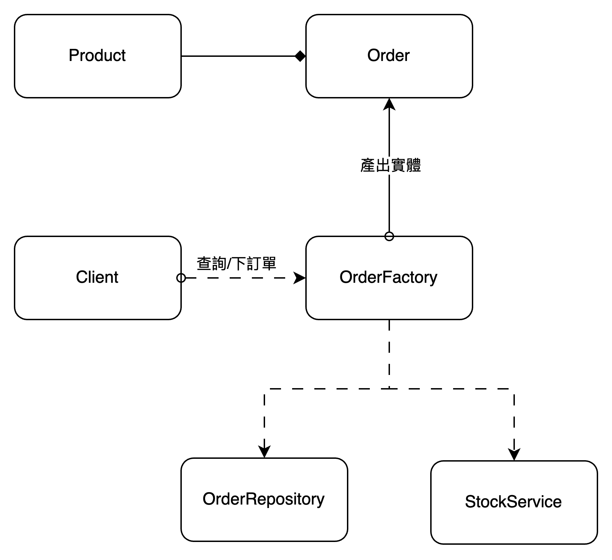

public StudentScoreTest {
@Test
void testAverage() {
var grades = new StudentScore(74, 62, 92);
var average = grades.getAverage();
assertThat(average).isEqualTo(76);
}
}
夠簡單吧，但是現實幾乎不可能有像StudentScore這種完全不依賴其它物件的類別。
訂單系統範例
在開始討論依賴問題前，先來描述一個訂單系統的使用情境，因為後面的章節會接連使用這個系統來當範例。
系統可以接受使用者下訂單
每個訂單在下訂前需檢查庫存的數量是否充足
若庫存充足，成立訂單，並且扣除庫存總數
若庫存不足，拋出錯誤訊息
可使用訂單編號查詢以成立的訂單
下面的 UML 可幫助我們了解物件間的關係

外部依賴
依賴即引用，也就是指某個類別需要另一個類別的幫助才能完成任務，說白話點就是有程式裡有出現import的關鍵字。 如先前提到的訂單系統 OrderFactory 需要使用 OrderRepository 來把已存入資料庫中的 Order 物件重新載入到記憶體或把新的Order寫入進資料庫，可以參考下面的程式碼
import com.example.Order;
import com.example.OrderRepository;
@RequiredArgsConstructor
public class OrderFactory {
private final OrderRepository orderRepository;
public Order reconstruction(Long orderId) {
return orderRepository.findById(orderId);
}
}
public class OrderFactoryTest {
@Autowired
private OrderFactory orderFactory;
@Test
void testReconstruction() {
Order order = orderFactory.reconstruction(10L);
assertThat(order.getId()).isEqualTo(10L);
}
}
上面的測試能跑是能跑，但有個問題，也就是必須保證資料庫裡有 ID = 10 的這筆資料，才能夠亮起綠燈。或許你可以保證開發環境的資料庫會有這筆資料，但你能保證 SIT/UAT 的資料庫也會有嗎？ 有的人也許會說，既然我們不能保證資料在各環境的資料庫都存在，那可以健一個專門給單元測試用的資料庫啊。確實健一個專有的資料庫可以解決問題，但別忘了多了一個資料庫就會需要維護，那麼是誰要去維護呢？